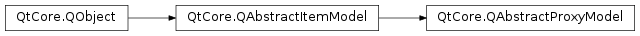

QAbstractProxyModel¶
Inherited by: QSortFilterProxyModel, QIdentityProxyModel
Synopsis¶
Functions¶
- def
sourceModel()
Virtual functions¶
- def
mapFromSource(sourceIndex) - def
mapSelectionFromSource(selection) - def
mapSelectionToSource(selection) - def
mapToSource(proxyIndex) - def
setSourceModel(sourceModel)
Detailed Description¶
The
PySide2.QtCore.QAbstractProxyModelclass provides a base class for proxy item models that can do sorting, filtering or other data processing tasks.This class defines the standard interface that proxy models must use to be able to interoperate correctly with other model/view components. It is not supposed to be instantiated directly.
All standard proxy models are derived from the
PySide2.QtCore.QAbstractProxyModelclass. If you need to create a new proxy model class, it is usually better to subclass an existing class that provides the closest behavior to the one you want to provide.Proxy models that filter or sort items of data from a source model should be created by using or subclassing
PySide2.QtCore.QSortFilterProxyModel.To subclass
PySide2.QtCore.QAbstractProxyModel, you need to implementPySide2.QtCore.QAbstractProxyModel.mapFromSource()andPySide2.QtCore.QAbstractProxyModel.mapToSource(). ThePySide2.QtCore.QAbstractProxyModel.mapSelectionFromSource()andPySide2.QtCore.QAbstractProxyModel.mapSelectionToSource()functions only need to be reimplemented if you need a behavior different from the default behavior.Note
If the source model is deleted or no source model is specified, the proxy model operates on a empty placeholder model.
-
class
PySide2.QtCore.QAbstractProxyModel([parent=nullptr])¶ Parameters: parent – PySide2.QtCore.QObjectConstructs a proxy model with the given
parent.
-
PySide2.QtCore.QAbstractProxyModel.mapFromSource(sourceIndex)¶ Parameters: sourceIndex – PySide2.QtCore.QModelIndexReturn type: PySide2.QtCore.QModelIndexReimplement this function to return the model index in the proxy model that corresponds to the
sourceIndexfrom the source model.
-
PySide2.QtCore.QAbstractProxyModel.mapSelectionFromSource(selection)¶ Parameters: selection – PySide2.QtCore.QItemSelectionReturn type: PySide2.QtCore.QItemSelectionReturns a proxy selection mapped from the specified
sourceSelection.Reimplement this method to map source selections to proxy selections.
-
PySide2.QtCore.QAbstractProxyModel.mapSelectionToSource(selection)¶ Parameters: selection – PySide2.QtCore.QItemSelectionReturn type: PySide2.QtCore.QItemSelectionReturns a source selection mapped from the specified
proxySelection.Reimplement this method to map proxy selections to source selections.
-
PySide2.QtCore.QAbstractProxyModel.mapToSource(proxyIndex)¶ Parameters: proxyIndex – PySide2.QtCore.QModelIndexReturn type: PySide2.QtCore.QModelIndexReimplement this function to return the model index in the source model that corresponds to the
proxyIndexin the proxy model.
-
PySide2.QtCore.QAbstractProxyModel.setSourceModel(sourceModel)¶ Parameters: sourceModel – PySide2.QtCore.QAbstractItemModelSets the given
sourceModelto be processed by the proxy model.Subclasses should call
PySide2.QtCore.QAbstractItemModel.beginResetModel()at the beginning of the method, disconnect from the old model, call this method, connect to the new model, and callPySide2.QtCore.QAbstractItemModel.endResetModel().
-
PySide2.QtCore.QAbstractProxyModel.sourceModel()¶ Return type: PySide2.QtCore.QAbstractItemModelReturns the model that contains the data that is available through the proxy model.
© 2018 The Qt Company Ltd. Documentation contributions included herein are the copyrights of their respective owners. The documentation provided herein is licensed under the terms of the GNU Free Documentation License version 1.3 as published by the Free Software Foundation. Qt and respective logos are trademarks of The Qt Company Ltd. in Finland and/or other countries worldwide. All other trademarks are property of their respective owners.